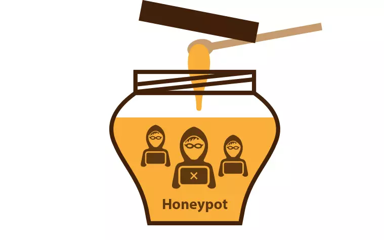

Security
Honeypots
Ein Honeypot ist ein System, das absichtlich verwundbar gemacht wird, um Hacker anzulocken und ihr Verhalten zu analysieren. Unternehmen und Sicherheitsforscher benutzen Honeypots, um Angriffsmethoden zu verstehen und Sicherheitslücken frühzeitig zu erkennen. Sie werden isoliert , um keine echten Systeme zu gefährden.
Funktionsweise eines Honeypots
Ein Honeypot simuliert ein echtes System und protokolliert jede Interaktion. So lassen sich Angriffstechniken analysieren und Sicherheitsmassnahmen verbessern.
Arten von Honeypots
Einsatzgebiete
Honeypots werden zur Früherkennung von Bedrohungen und zur Untersuchung neuer Angriffstechniken genutzt. Forschungseinrichtungen analysieren damit Cyberkriminelle und Angriffsmuster.
Vorteile
Nachteile
Gute Hacker können Honeypots erkennen. Wenn der Honeypot schlecht gesichert ist können Hacker auch darüber angreifen.
Fazit
Honeypots sind ein wertvolles um Analyse von Angriffenzu machen.